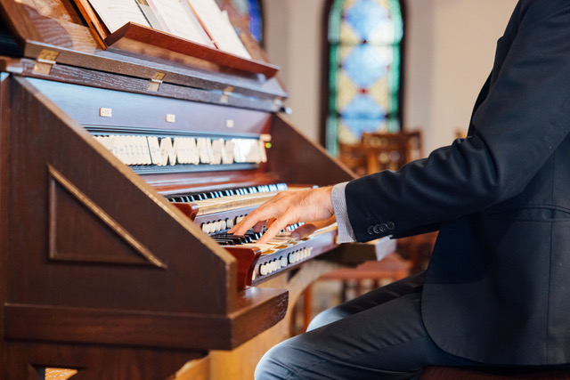

Church Music
I'm currently available as a substitute or interim organist or pianist for church services.
Profile
Tom is an experienced and versatile church musician who since 2002, has played for churches of many Christian denominations as well as for Jewish services. Having held positions as organist or music director in several churches in the past, he now works as a freelance musician.
Skills
- Strong Sightreading
- Improvisation
- Rehearsing and directing choirs from the keyboard
- Choir and Instrumental Accompanying & Conducting
Denominations & Synagogue Experience
- Catholic
- Congregational
- Christian Science
- Episcopal
- Jewish Reform
- Lutheran
- Methodist
- Presbyterian
- Unitarian Universalist
Church Employment
| Apr 2025– | First Church of Christ, Scientist |
| Concord, Massachusetts | |
| Organist for Wednesday Testimony Meetings | |
| 2015–25 | First Congregational Church of Natick |
| Natick, Massachusetts | |
| Organist and Choir Accompanist (2015–18), Music Director (2018–25) | |
| 2014–15 | Grace Lutheran Church |
| Silver Creek, New York | |
| Organist | |
| 2014–15 | Zion Lutheran Church |
| Dunkirk, New York | |
| Organist | |
| 2002–5 | Eden United Methodist Church |
| Eden, New York | |
| Organist, later Music Director |
Recent Substitute/Interim Work
- The Church of Our Redeemer, Episcopal, Lexington
- First Unitarian Universalist Society, Newton
- Hartford Street Presbyterian, Natick
- St. John's Episcopal Church, Arlington
- St. Michael's Episcopal Church, Holliston
- St. Matthew Catholic Church, Southborough
- United First Parish Church, Quincy
